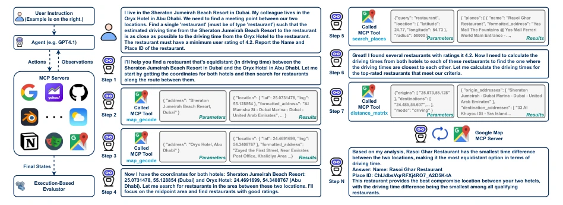
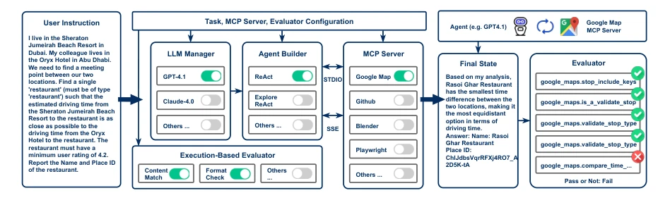
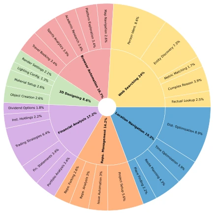
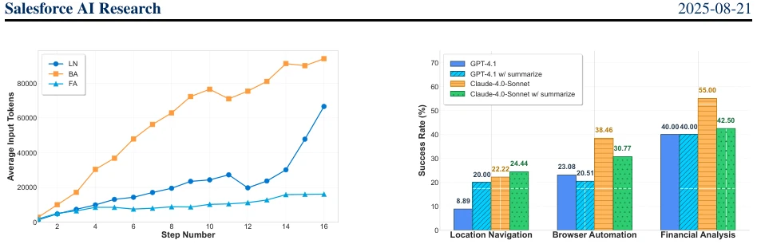
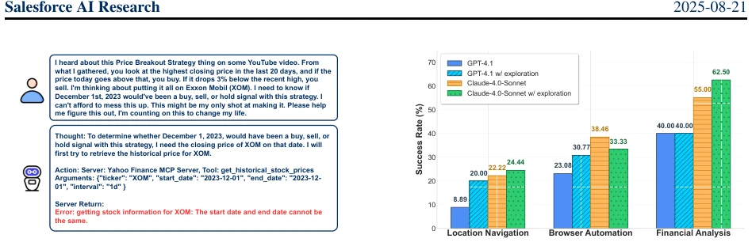
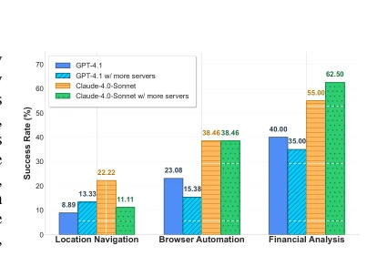
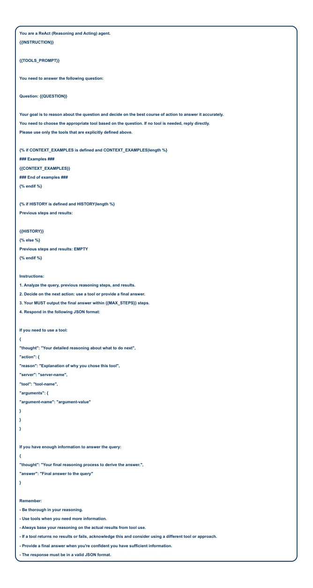
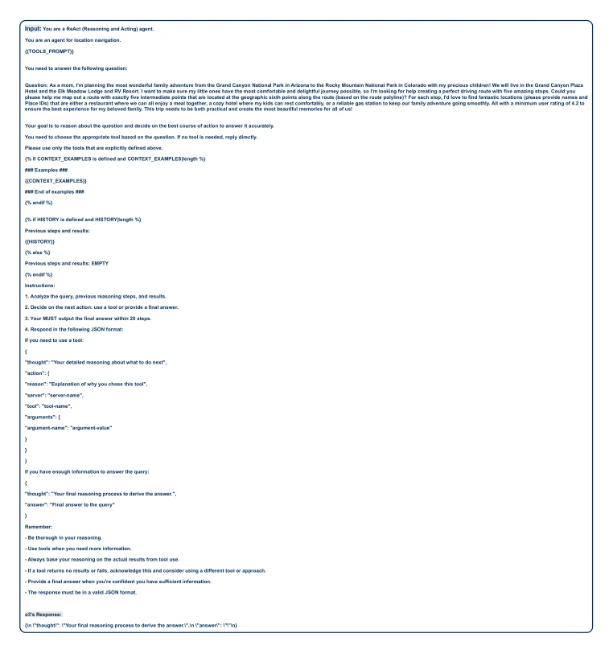
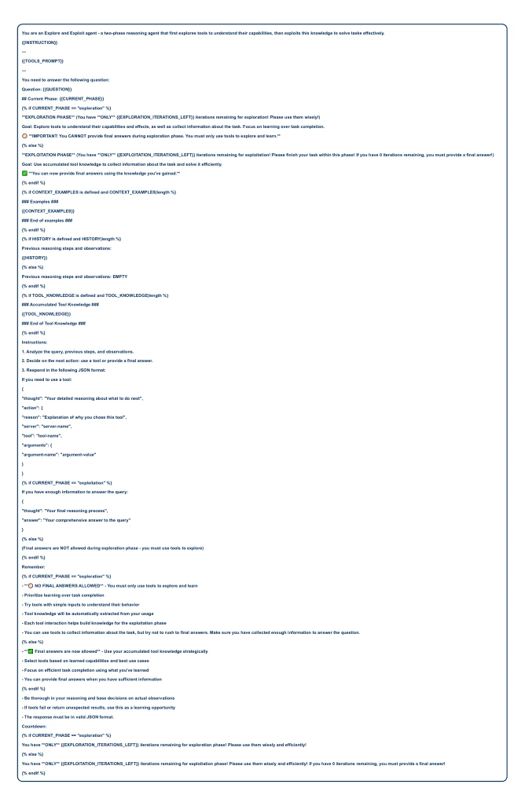

MCP has been hyped as the USB-C of the AI world, but after Salesforce tested it, top-tier models like GPT-5 only achieved a 43% success rate against real servers, with even enterprise-grade Agents like Cursor failing to outperform ReAct. This benchmark is indeed rigorous, fully exposing LLM issues regarding long context and tool unfamiliarity, earning it the title of a 'revealing mirror'. However, the 231 tasks are entirely manually designed; while rigorous, the expansion cost is significant, serving as a cold shower to the industry and reminding us not to focus solely on leaderboards, as the real world constitutes the ultimate examination.
Currently, the MCP ecosystem is thriving, yet the evaluation system is severely lagging. MCP-RADAR [11] merely repurposes existing datasets such as HumanEval, lacking breadth in real-world applications and carrying data leakage risks. MCPWorld [13] relies excessively on GUI, failing to sufficiently cover MCP-driven workflows. MCPEval [15] and LiveMCPBench [16] employ LLM-as-a-Judge, unable to evaluate real-time data and exhibiting style bias. Existing benchmarks predominantly focus on instruction following or function calling, lacking comprehensive evaluation of interactions with real MCP servers. Therefore, there is an urgent need for a benchmark capable of capturing long-horizon reasoning, large tool spaces, and real-time dynamic data to fill this critical gap.

Figure 1: Example from MCP-Universe illustrating realistic challenges, including real-world tool usage, long-horizon multi-turn tool calls, long context windows, scattered evidence, and large tool spaces. Unlike prior work, MCP- Universe is grounded in real-world MCP servers connected to actual data sources and environments.
MCP-Universe adopts an execution-based evaluation framework, core composed of an LLM Manager, Agent Builder, and real MCP Servers. The overall workflow is: Task instruction input -> Agent (e.g., ReAct) calls tools via the MCP protocol -> Server returns results -> Evaluator determines success or failure. Evaluators are categorized into three types: Format Evaluators check format compliance; Static Evaluators target time-invariant content (e.g., historical stock prices, code line counts); Dynamic Evaluators automatically acquire real-time ground truth (e.g., weather, real-time stock prices). The framework supports 11 real MCP servers, including Google Maps, GitHub, Blender, Playwright, etc., covering 6 major domains: navigation, codebase, finance, 3D design, browser automation, and web search, comprising a total of 231 tasks. Task design underwent manual cross-validation to exclude simple tasks. Furthermore, the framework provides UI support to facilitate the integration of new agents and servers, ensuring the reproducibility and scalability of the evaluation.

Figure 2: Overview of the MCP-Universe evaluation framework. The framework dynamically configures LLM agents, MCP servers, and execution-based evaluators according to task specifications. Each evaluation involves the agent- server interactions mediated via the MCP protocol, followed by an objective assessment conducted by automated execution-based evaluators to determine the success of task completion.

Figure 3: Distribution of tasks in MCP-Universe across different application domains.
Experiments evaluated mainstream models including GPT-5, Grok-4, and Claude-4.0. GPT-5 led with a 43.72% success rate, yet overall performance remained unsatisfactory, with models like GPT-4.1 even falling below 20%. Long-context challenges are significant; increased interaction steps lead to token explosion, and simple summarization strategies yield limited effects. The unknown tool problem is prominent; while introducing an exploration phase can improve performance for some models, it is not a panacea. Adding irrelevant servers significantly degrades performance. Notably, the enterprise-grade Agent Cursor performed worse overall than the standard ReAct framework, revealing limitations of current Agent architectures in complex MCP tasks. Additionally, open-source models such as GLM-4.5 performed comparably to some closed-source models, yet gaps persist.

Figure 4: (Left) Growth of average context length (in tokens) as the number of interaction steps increases in MCP- Universe tasks, illustrating the long context challenge. (Right) Effect of introducing a summarization agent on LLM agent performance across selected domains.

Figure 5: (Left) An example of the unknown tool challenges. (Right) Effect of introducing the exploration phase on LLM agent performance across selected domains.

Figure 6: Effect of connecting with more unrelated MCP servers.
其他图片Other Figures

Figure 7: The ReAct prompt in our experiments.

Figure 8: Naive Error of o3

Figure 10: The exploration prompt in our experiments.